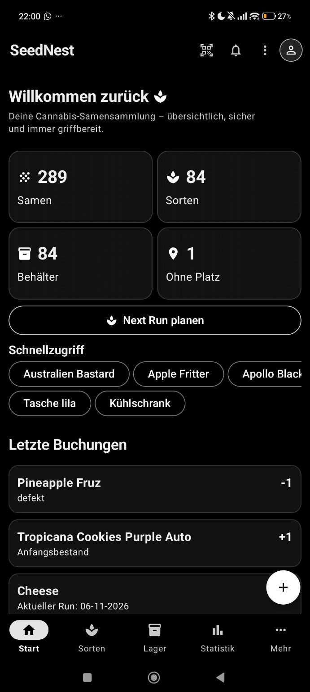

Sortenkatalog
Genetik, Breeder, Merkmale und Favoriten strukturiert verwalten.
SeedNest ist deine Android-App für die private Cannabis-Samensammlung: Verwalte Sorten und Samen, dokumentiere Bestände, organisiere Lagerplätze und finde Einträge mit QR-Etiketten wieder.


Mehr Überblick, weniger Suchen: die wichtigsten Werkzeuge für deine Sammlung in einer Oberfläche.
Genetik, Breeder, Merkmale und Favoriten strukturiert verwalten.
Schrank, Tasche, Ebene und Platz präzise zuordnen.
Behälter und Lagerpositionen schneller wiederfinden.
Mengen und Veränderungen übersichtlich dokumentieren.
Sammlung und Verteilung auf einen Blick erfassen.
Deine Daten über die vorgesehenen Sicherungswege schützen.
Lege Einträge mit Genetik, Breeder, Merkmalen und Fotos an.
Organisiere Schränke, Taschen, Ebenen und einzelne Plätze.
Nutze Suche, Filter und QR-Zuordnungen für schnellen Zugriff.
Die aktuelle öffentliche Alpha, Installationshinweise und den Versionsverlauf findest du auf der offiziellen Downloadseite. Bestehende App-Daten vor Updates sichern.